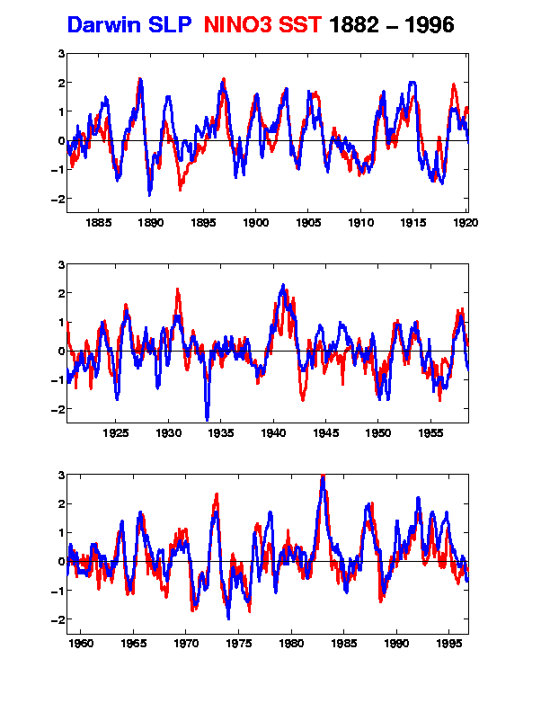

Gilbert Walker is credited with identifying the relationship of the surface air pressure between the Indian and Pacific Oceans.
In 1877, the region experienced the worst famine in its history, due to the failure of the monsoon rains. As a result, an observatory was founded to explore whether future famines could be prevented. In 1904, Sir Gilbert Walker, a British mathematician entered the British Colonial Service as Director General of the meteorological observatory, with the goal of predicting Asian monsoon fluctuations. To do so, Walker sorted through world weather records which described the sea level pressure swing between South America and India-Australia. He found that many global climate variations were correlated with the Southern Oscillation, a large scale see-sawing of mean sea level pressure (SLP) between the eastern and western sides of the tropical Pacific
Normally, SLP is relatively high in the south central Pacific (e.g. Tahiti) and relatively low over the Indian Ocean and Northern Australia (e.g. Darwin), with a net transport of air at low latitude from east to west (the easterly trade winds). Every few years the SLP difference between east and west weakens; consequently the trades relax and there is often drought in India and Australia. Monsoon precipitation correlations to the Southern Oscillation were established by Walker et al in the mid 1920s.
A widely used index of the strength of the Southern Oscillation, the Southern Oscillation Index (SOI) is given by the normalized difference of: (SLP at Tahiti - SLP at Darwin). Barometric records at those stations go back to the 1880's proved to be paramount in Walker's discovery.
There is a tight coupling between the Southern Oscillation and eastern equatorial sea surface temperatures. The figure below is a time series of SOI plotted against a widely used El Niño index called NINO3. NINO3 is the sea surface temperature anomaly (departure from normal) averaged over a specified area of equatorial eastern Pacific.
Walker, however, failed to make the connection between the Southern Oscillation and El Niño. This link was made convincingly by the Norwegian America meteorologist, Jacob Bjerknes.
Walker, G. T. and Bliss, E. W. (1932) World Weather. V. . Mem. Roy. Meteor. Soc.. 4, 53-84.
Walker, G. (1933). Seasonal Weather and its Prediction.. Nature (London),. 132(3343), 805-808.